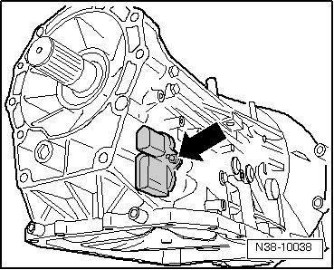
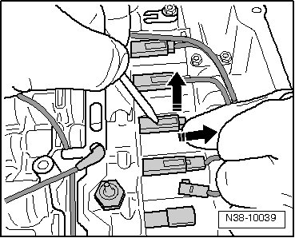
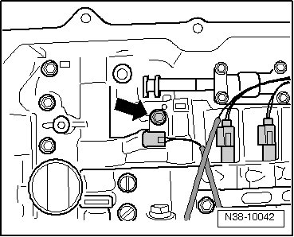
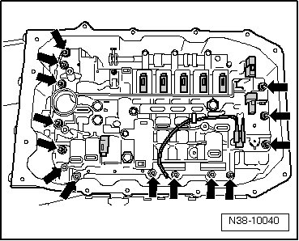

Removal and Replacement
Valve Body
- If still installed, remove oil filter. Refer to --> [ Oil Filter ] Service and Repair.
Transmissions with Hydraulic Pressure Sensors:
- Carefully pull off the connectors for automatic transmission hydraulic pressure sensor 1 (G193) - 1 - and automatic transmission hydraulic pressure sensor 2 (G194) - 2 -.

Continuation for All
- Remove connector bolt - arrow -.

- Carefully release connector and pull off.

- The transmission fluid temperature sensor (G93) must be tightened to 10 Nm.

- Remove valve body bolts in diagonal sequence.

Tightening Specification: 8 Nm + 90°.
- Installation is performed in the reverse order of removal.
- After installation, fill with ATF, check ATF level, and top off. Refer to --> [ ATF Level Checking and Filling ] ATF Level Checking and Filling.